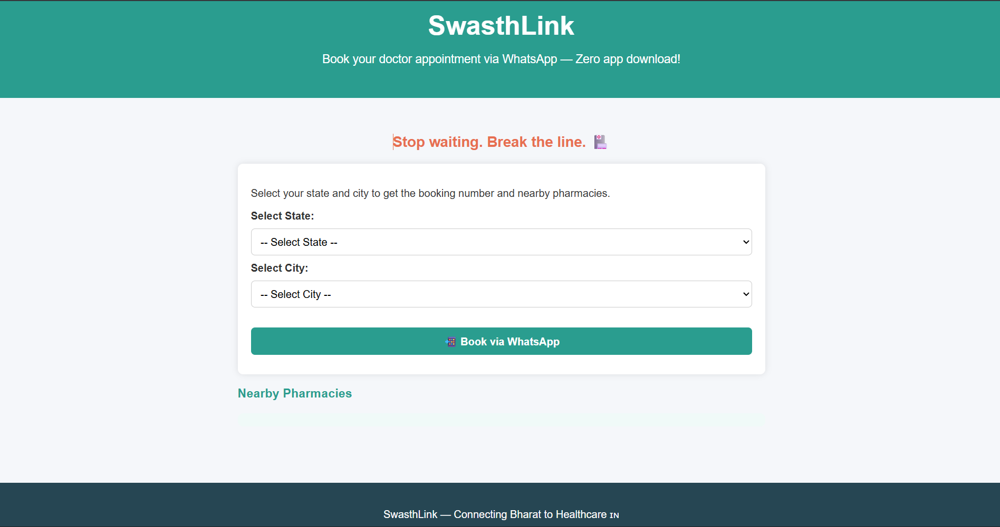
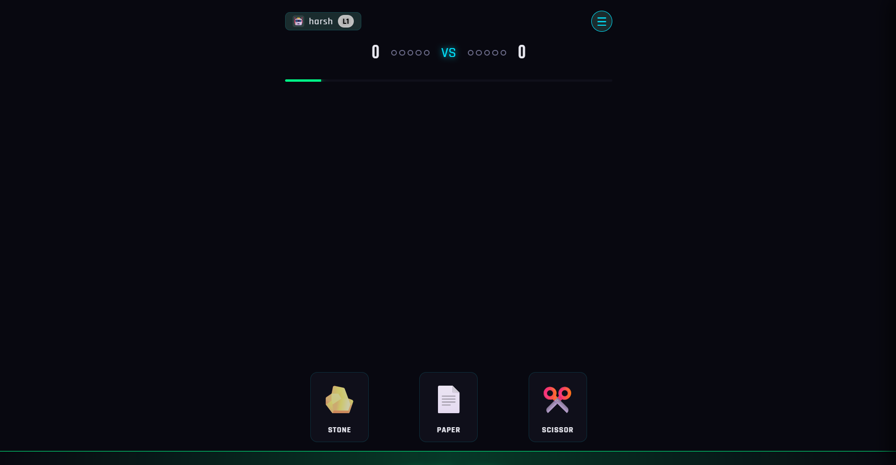
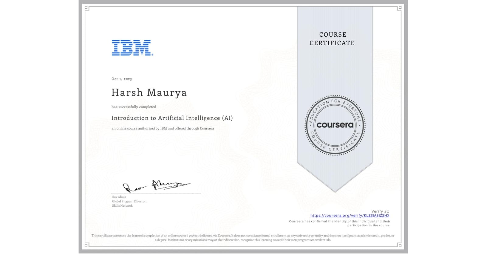
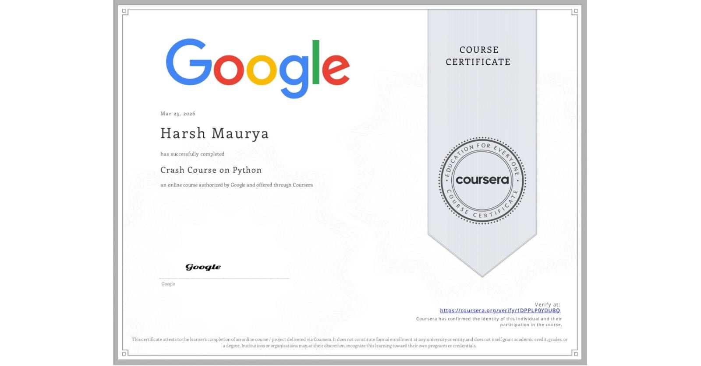
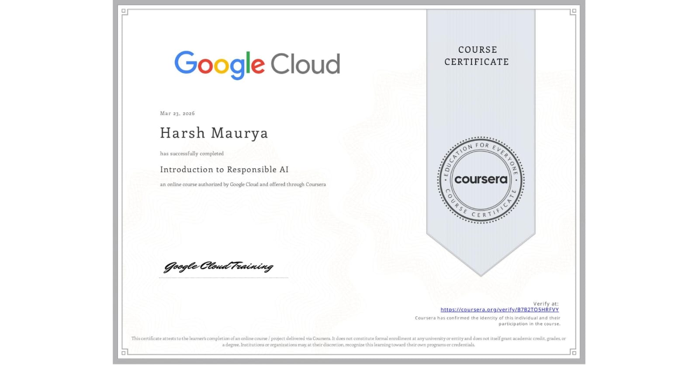
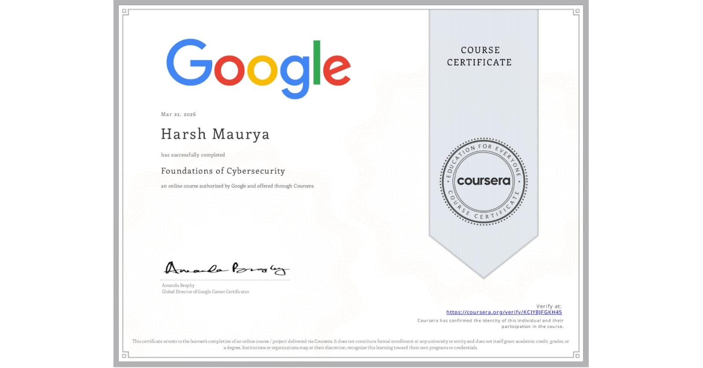

Computer Science Engineer focused on building hyper-local solutions and exploring the bleeding edge of AI research.
// About Me
1st-year Computer Science Engineering student bridging software development, AI research, and system architecture. Experienced in deploying local Large Language Models (LLMs), building full-stack web prototypes. Focused on building scalable, hyper-local solutions for underserved markets.
// Architecture & Infrastructure
Full-stack AI Prototyping
// Research & Explorations
Core mechanics of LLMs, Neural Networks, and AI Security.
Local LLM Optimization, Agentic Workflows, and GraphRAG architectures.
Deploying and experimenting with Kimi-k2.5, Qwen2.5-coder, and Gemma.
Neuromorphic Computing, Floquet Engineering, and Muon Tomography.
// Engineering & Architecture

The Pitch: A "Scan & Share" prototype designed to eliminate physical wait times in healthcare and retail environments through integrated digital profiles.
Developed a full-stack Virtual Queue Management system to streamline patient and customer check-ins. The system utilizes a 'Scan and Share' architecture, enabling users to instantly transmit profiles for faster processing. I integrated simulated ABDM (Ayushman Bharat Digital Mission) profile fetching and UPI payment simulations to demonstrate a secure, end-to-end user journey from registration to transaction.
The Pitch: An advanced Knowledge Retrieval application leveraging Graph-based Retrieval-Augmented Generation and local Large Language Models.
Built and optimized a GraphRAG application to solve the context-window limitations of standard LLMs. By utilizing Ollama to host local models (like Qwen2.5 and Gemma) and Streamlit for the interface, I created a system that maps complex relationships between data points before generating responses. This project involved deep performance analysis of local inference speeds versus retrieval accuracy.

The Pitch: A fully playable, polished browser game demonstrating advanced DOM manipulation, state management, and asset handling.
Developed "Snake Water Gun 3.0" (a variant of Stone Paper Scissor) as a highly interactive web application. The game features an integrated audio engine, an AI difficulty system, and a robust achievements tracker, providing a high-quality native-app feel directly within the browser.
// Verified Skills & Training
Google Cloud
Google Cloud

IBM


Google Cloud

// Media & Branding
Educational Content Strategy & Channel Management
// Strategic Architecture
I combine Advanced Prompt Engineering with rigorous problem solving to unlock optimal solutions.
End-to-End Project Management — transforming abstract architecture into deployed reality.
Technical Content Writing and structured debating for logical defense of technical choices.